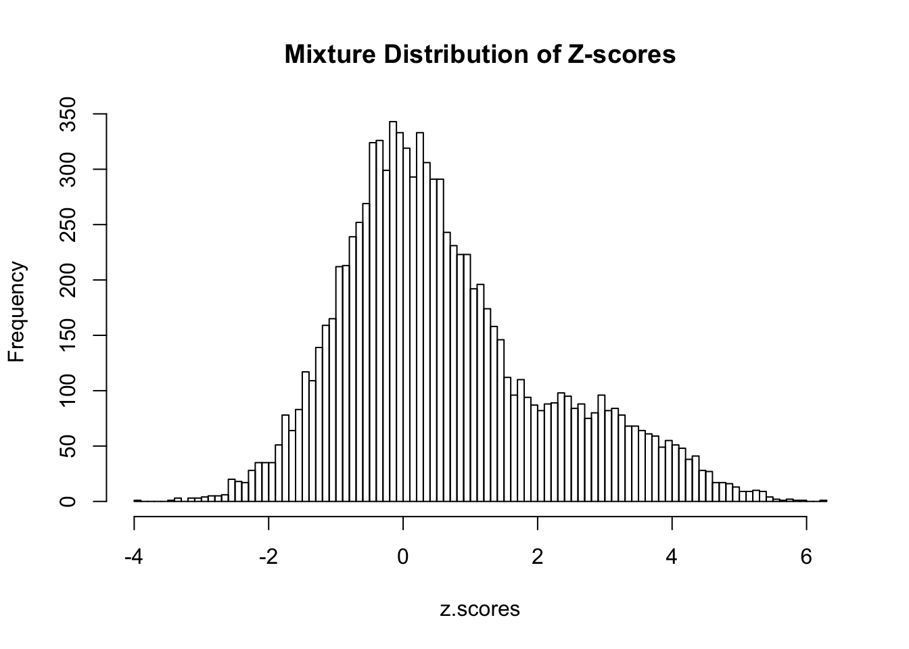

Last updated: 2016-02-02
Code version: feafde067eb560f604c2fed62bb8ff00f02f27be
This document introduces data coming from a mixture of two or more different distributions.
You should be comfortable with distributions and likelihood functions
Often times in statistics we make the assumption that a random variable is drawn from an underlying distribution (i.e. Normal, Poisson, Exponential, etc). In practice, it may that our data comes from a combination or “mixture” of some of these pre-defined distributions. The principles shown here use pre-defined distributions, but they extend more generally to using arbitrary distributions.
Suppose that we have a set of density functions \(f_1,...,f_k\) and that a random variable \(X\) is drawn from \(f_1\) with probability \(\pi_1\), from \(f_2\) with probability \(pi_2\), and so on. We can then consider \(X\) to be from the following distribution:
\[ X \sim \pi_1f_1(x) + \pi_2f_2(x) + ... + \pi_nf_k(x)\] \[ \sum^k_{i = 1} \pi_{i} = 1 \]
The constraint that all of the mixture proportions (\(\pi_i\)) must sum to 1 is to ensure that this mixture distribution still retains the properties of being a valid probability distribution. We can also characterize this distribution by the number of terms in the sum, which are called components. The density functions that are defined for each component are called component densities. So for the second component in our model above, the mixture proportion would be \(\pi_2\) and the component density would be \(f_2\).
For this example, let us assume that we are drawing z-scores for a one-sided test. These are generated as a function of our randomly generated data. We know that the null distribution of z-scores is \(N(0,1)\) and that the proportion of nulls within the data is 90% (\(\pi_0 = 0.8\)). The signals for our particular test are very strong and drawn from the \(N(3,1)\) distribution. The propotion of signals within our data is 10% (\(\pi_1 = 0.2\)). Thus our full model for the \(i^{th}\) Z-score can be defined as:
\[ Z_i \sim \pi_0 N(0,1) + \pi_1 N(3,1) \] \[ Z_i \sim (0.90) N(0,1) + (0.1) N(3,1) \]
num.iterations <- 10000
z.scores <- c()
for (i in 1:num.iterations){
z.scores[i] <- ifelse(rbinom(1,1,p=0.2), rnorm(1,3,1), rnorm(1,0,1))
}
hist(z.scores, breaks=100, main="Mixture Distribution of Z-scores")
It is important to note here that the distribution is not normal! It is tempting to think that the resulting distribution may look like the sum of two Normal distributions (which is also Normal). We can clearly visualize the larger density in the right tail due to the proportion of z-scores that are signals.
Following the example above, suppose that we have been given a
\[ \begin{aligned} L(\pi) &= \prod^n_{i=1} P(x_i | \pi)\\ l(\pi) &= \sum^n_{i=1} log\left(P(x_i | \pi)\right)\\ &= \sum^n_{i=1} log\big[\pi_1 P(x_i | \pi_1) + ... + \pi_k P(x_i | \pi_k) \big]\\ &= \sum^n_{i=1} log\Big[\sum^k_{j=1} \pi_j P(x_i | \pi_j) \Big] \end{aligned} \]
sessionInfo()R version 3.2.3 (2015-12-10)
Platform: x86_64-apple-darwin15.2.0 (64-bit)
Running under: OS X 10.11.3 (El Capitan)
locale:
[1] en_US.UTF-8/en_US.UTF-8/en_US.UTF-8/C/en_US.UTF-8/en_US.UTF-8
attached base packages:
[1] datasets utils stats graphics grDevices methods base
other attached packages:
[1] knitr_1.11 viridis_0.3.2 magrittr_1.5 data.table_1.9.6
[5] tidyr_0.4.0 dplyr_0.4.3 ggplot2_1.0.1 MASS_7.3-45
loaded via a namespace (and not attached):
[1] Rcpp_0.12.2 munsell_0.4.2 colorspace_1.2-6 R6_2.1.1
[5] stringr_1.0.0 plyr_1.8.3 tools_3.2.3 parallel_3.2.3
[9] grid_3.2.3 gtable_0.1.2 DBI_0.3.1 htmltools_0.3
[13] yaml_2.1.13 assertthat_0.1 digest_0.6.8 gridExtra_2.0.0
[17] formatR_1.2.1 reshape2_1.4.1 evaluate_0.8 rmarkdown_0.9.2
[21] stringi_1.0-1 scales_0.3.0 chron_2.3-47 proto_0.3-10